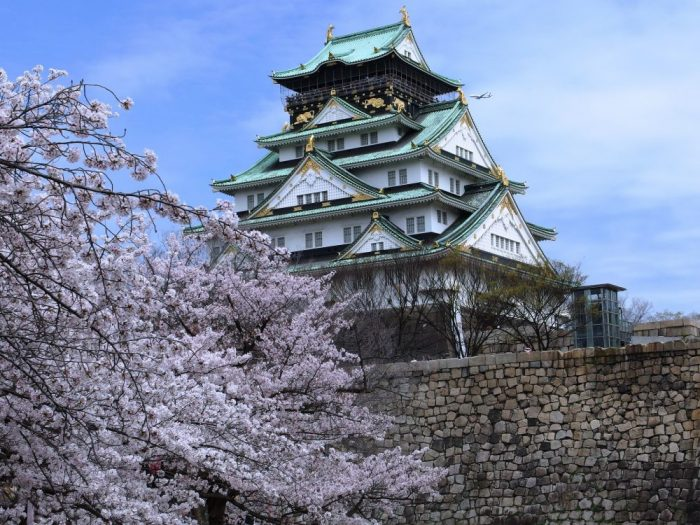

OSAKA CASTLE
The current main tower at Osaka Castle is a concrete reconstruction of the 17th-century castle and was completed in 1931. In its original construction back in the 16th century, it was unparalleled as the largest and best constructed castle in Japan. Osaka Castle is one of the most famous and historic castles in all of Japan. The iconic symbol of Osaka in the Kansai region of central Japan played an important role in the unification of Japan during the samurai era of the sixteenth century.